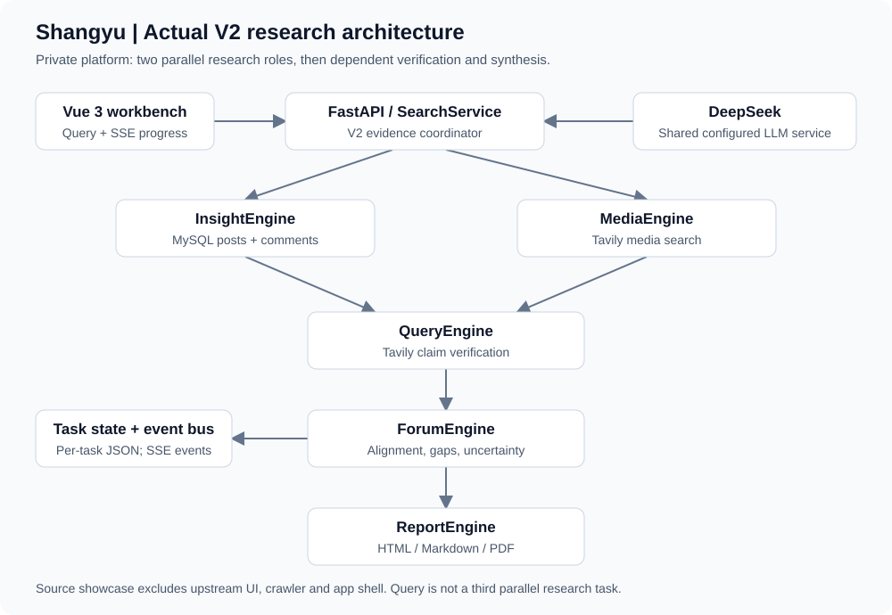

Multi-Agent AI Product Sentiment & User Feedback Intelligence Platform
Static public case summary. Aggregate results from the inspected private Doubao case; this page does not call an LLM or reproduce the application UI.
| Real collected posts | 24 |
|---|---|
| Real collected comments | 83 |
| Primary posts analyzed | 12 |
| Comments sent to analysis | 15 |
| Core findings with citations | 5 |
| Core findings reviewed | 5 |
| Private verified PDF pages | 15 |
Private single-platform convenience sample; assistant-assisted in-sample review, not blind validation.
Core coverage is 5/5; this does not prove user experiences objectively true. Product and operations recommendations remain hypotheses.
